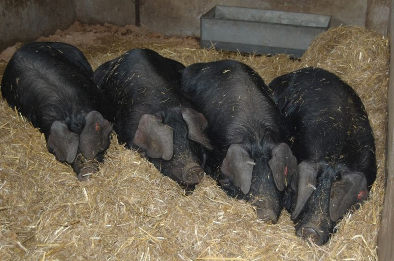
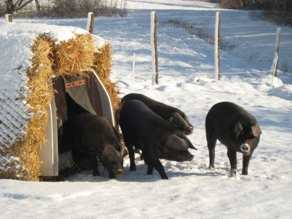
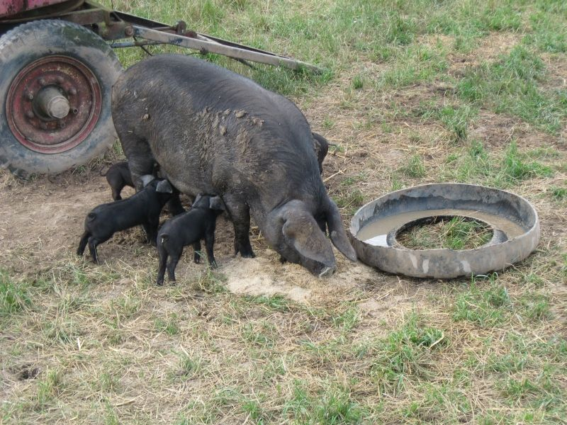

Schwarzerle vom Laimbachhof
Cornwallschweine aus dem südlichen Steigerwald, das ganze Jahr draußen. Frischfleisch reservierst du vom nächsten Schwein und holst es ab. Schinken, Speck und Wurst schicken wir dir per Post.

Schwein reservieren
Frischfleisch gibt es nur zum Abholen. Wir verkaufen jedes Schwein ganz – du reservierst vorher dein Stück.
frei wird knapp vergeben
So entsteht der Tagespreis
Wir verkaufen jedes Schwein komplett. Darum richtet sich der Preis eines Teilstücks nach der noch verfügbaren Menge und den Tagen bis zum Schlachttermin. Er bewegt sich in einem festen Rahmen von höchstens 15 % nach oben oder unten, ändert sich höchstens einmal am Tag (um 0 Uhr), ist für alle Kundinnen und Kunden gleich und wird nicht persönlich angepasst. Der Preis, den du beim Bestellen siehst, gilt für deine Bestellung.
Ein fester Querschnitt durchs ganze Schwein, vakuumiert und beschriftet – fürs Gefrierfach. Kein Aussuchen, dafür alles dabei.
Versandshop
Über Buchenholz geräuchert und vakuumiert – das hält und darf deshalb per Post kommen. Auch als Geschenk an eine andere Adresse.
Geschenkpakete
Dauerware nach Gewicht
Wo & wann
Im Hofladen, am Verkaufswagen in Nürnberg Süd und in Scheinfeld. Der nächste Termin ist markiert.
Der Hof
Der Laimbachhof liegt in Oberlaimbach bei Scheinfeld, im südlichen Steigerwald. Johannes Buchner, Landwirtschaftsmeister, hält hier Cornwallschweine – eine alte Rasse, deren Zucht in Deutschland in den 60er-Jahren aufgegeben wurde.



- Futter selbst gemischt, vor allem aus eigenem Anbau, gentechnikfrei.
- Schlachtung in der hofnahen Metzgerei. Bis dahin bleiben die Tiere auf der Koppel.
- Fleisch kräftig und gut durchwachsen, mit kernigem Speck.